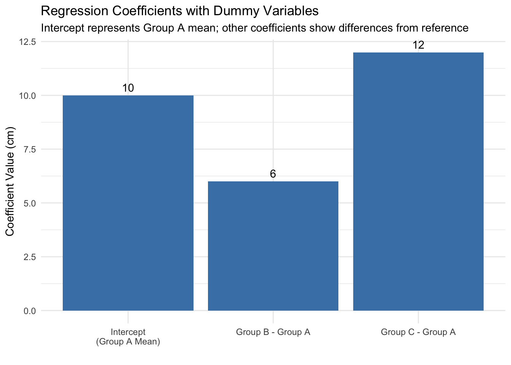

This document demonstrates how Analysis of Variance (ANOVA) is mathematically equivalent to a regression model with dummy variables using an example with R code and visualizations.
Setup and Data Creation
Let’s begin by loading necessary packages and creating a dataframe about plant heights with three different fertilizer treatments.
# install.packages("flextable")library(tidyverse)library(flextable)# Create the datasetfertilizer_data <-tibble(fertilizer =rep(c("A", "B", "C"), each =3),height =c(10, 12, 8, # Fertilizer A14, 16, 18, # Fertilizer B20, 22, 24) # Fertilizer C)# Display the dataset using flextableflextable(fertilizer_data) %>%set_caption("Plant Heights by Fertilizer Type") %>%theme_vanilla() %>%autofit()
fertilizer
height
A
10
A
12
A
8
B
14
B
16
B
18
C
20
C
22
C
24
Calculating Group Means (ANOVA Approach)
In ANOVA, we calculate the mean of each group and compare variation between groups to variation within groups.
# Run ANOVAanova_model <-aov(height ~ fertilizer, data = fertilizer_data)anova_summary <-summary(anova_model)anova_summary
Df Sum Sq Mean Sq F value Pr(>F)
fertilizer 2 216 108 27 0.001 **
Residuals 6 24 4
---
Signif. codes: 0 '***' 0.001 '**' 0.01 '*' 0.05 '.' 0.1 ' ' 1
Regression with Dummy Variables
For the regression approach, we’ll create dummy variables for fertilizer types, using fertilizer A as the reference level.
# Set fertilizer A as the reference levelfertilizer_data$fertilizer <-factor(fertilizer_data$fertilizer, levels =c("A", "B", "C"))# Run regression with dummy variablesreg_model <-lm(height ~ fertilizer, data = fertilizer_data)reg_summary <-summary(reg_model)reg_summary
Call:
lm(formula = height ~ fertilizer, data = fertilizer_data)
Residuals:
Min 1Q Median 3Q Max
-2 -2 0 2 2
Coefficients:
Estimate Std. Error t value Pr(>|t|)
(Intercept) 10.000 1.155 8.660 0.000131 ***
fertilizerB 6.000 1.633 3.674 0.010402 *
fertilizerC 12.000 1.633 7.348 0.000325 ***
---
Signif. codes: 0 '***' 0.001 '**' 0.01 '*' 0.05 '.' 0.1 ' ' 1
Residual standard error: 2 on 6 degrees of freedom
Multiple R-squared: 0.9, Adjusted R-squared: 0.8667
F-statistic: 27 on 2 and 6 DF, p-value: 0.001
Understanding the Regression Coefficients
In our regression model:
The intercept (10) is equal to the mean of the reference group (A)
The coefficient for fertilizer B (6) is the difference between mean of group B and mean of group A
The coefficient for fertilizer C (12) is the difference between mean of group C and mean of group A
# Create a table showing the relationship between coefficients and meanscoefs <-coef(reg_model)coefficients_explained <-tibble(Term =c("Intercept", "fertilizerB", "fertilizerC"),Coefficient = coefs,Meaning =c("Mean of Group A (reference group)","Difference between Group B and Group A means","Difference between Group C and Group A means" ),Mathematical_Expression =c("β₀ = μA","β₁ = μB - μA","β₂ = μC - μA" ),Numeric_Value =c(coefs[1],paste0(round(group_means$mean_height[2], 1), " - ", round(group_means$mean_height[1], 1), " = ", round(coefs[2], 1)),paste0(round(group_means$mean_height[3], 1), " - ", round(group_means$mean_height[1], 1), " = ", round(coefs[3], 1))))# Use flextable to format the tableflextable(coefficients_explained) %>%set_caption("Regression Coefficients Explained") %>%theme_vanilla() %>%fit_to_width(max_width =8, unit ="in") %>%bold(j =1) %>%colformat_double(j =2, digits =2)
Term
Coefficient
Meaning
Mathematical_Expression
Numeric_Value
Intercept
10.00
Mean of Group A (reference group)
β₀ = μA
10
fertilizerB
6.00
Difference between Group B and Group A means
β₁ = μB - μA
16 - 10 = 6
fertilizerC
12.00
Difference between Group C and Group A means
β₂ = μC - μA
22 - 10 = 12
Let’s visualize these coefficients:
coef_data <-tibble(Term =factor(c("Intercept\n(Group A Mean)", "Group B - Group A", "Group C - Group A"),levels =c("Intercept\n(Group A Mean)", "Group B - Group A", "Group C - Group A")),Value =c(coefs[1], coefs[2], coefs[3]))ggplot(coef_data, aes(x = Term, y = Value)) +geom_col(fill ="steelblue") +geom_text(aes(label =round(Value, 1)), vjust =-0.5) +labs(title ="Regression Coefficients with Dummy Variables",subtitle ="Intercept represents Group A mean; other coefficients show differences from reference",x ="",y ="Coefficient Value (cm)") +theme_minimal()

Demonstrating the Equivalence
Now, let’s prove that the regression model predictions are identical to the ANOVA group means:
Where: - \(\beta_0\) is the mean of the reference group - \(\beta_1, \beta_2, ..., \beta_{k-1}\) are the differences between each group’s mean and the reference group mean - \(X_1, X_2, ..., X_{k-1}\) are dummy variables (0 or 1)
In our example: - \(\beta_0 = 10\) (mean of group A) - \(\beta_1 = 6\) (difference between B and A) - \(\beta_2 = 12\) (difference between C and A)
Conclusion
This demonstration shows that one-way ANOVA is mathematically equivalent to regression with dummy variables. The key equivalences are:
ANOVA group means = Regression predictions for each group
F-statistic from ANOVA = F-statistic from regression
p-values are identical in both approaches
This confirms that both techniques are special cases of the General Linear Model, just expressed in different ways. For a categorical predictor with k levels, we need k-1 dummy variables in the regression approach, with one level serving as the reference category.